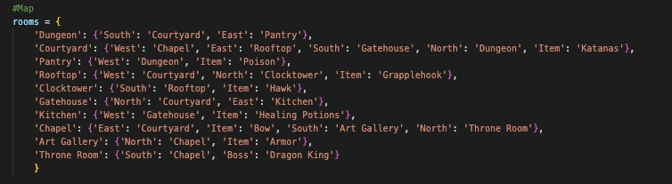
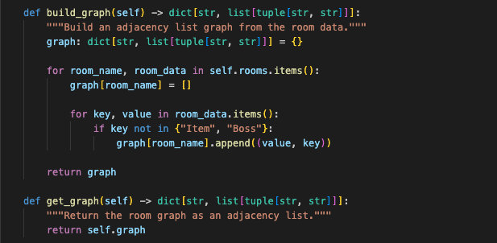
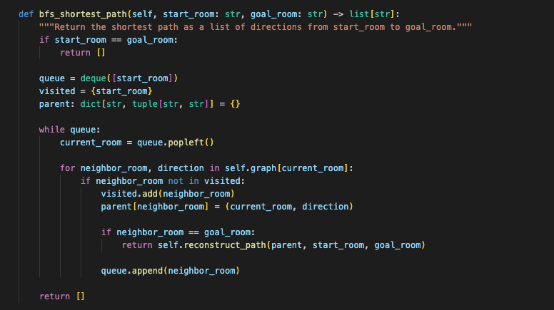
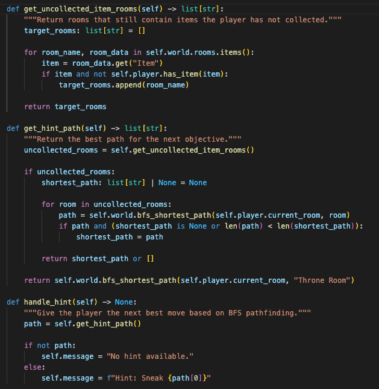

Graph Representation & Breadth-First Search (BFS)
Dragon King Assassin is a text-based adventure game originally implemented using basic Python data structures such as dictionaries. The game allows players to navigate between rooms, collect items, and progress toward defeating a final boss. While functional, the original implementation relied on simple lookups and did not leverage advanced algorithmic techniques.
This artifact was selected because it demonstrates a clear transition from basic data handling to advanced algorithmic problem-solving. The enhancement showcases my ability to apply data structures and algorithms to improve functionality and create a more intelligent and dynamic system.
In the original version, the game world was represented as a nested dictionary. Movement between rooms was handled through direct key lookups, with no abstraction or algorithmic reasoning applied. While effective for small-scale logic, this approach limited the system’s ability to support more advanced features such as pathfinding or optimization.

Original room structure using nested dictionaries for direct lookups.
The enhanced version transforms the room structure into a graph representation, where each room functions as a node and directional connections represent edges. A breadth-first search (BFS) algorithm was implemented to compute the shortest path between rooms.

Graph-based representation of rooms and connections.

Breadth-First Search implementation used for pathfinding.

Hint system guiding the player using shortest path logic.
This enhancement aligns with Outcome 3 by demonstrating the ability to design and evaluate computing solutions using algorithmic principles and appropriate data structures. It also supports Outcome 4 by implementing a feature that delivers meaningful value through efficient problem-solving techniques.
This enhancement strengthened my understanding of how data structures and algorithms can transform an application’s capabilities. One of the key challenges was implementing BFS correctly, including tracking visited nodes and reconstructing the shortest path. Additionally, I learned how to validate algorithm correctness in scenarios with multiple valid solutions. This experience reinforced the importance of choosing appropriate data structures to enable scalable and efficient solutions.